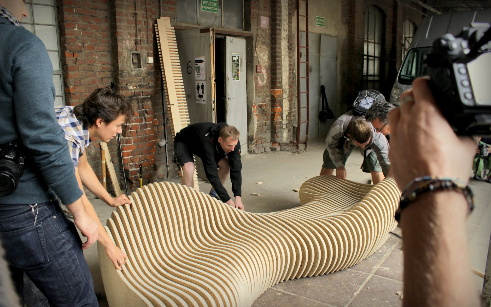
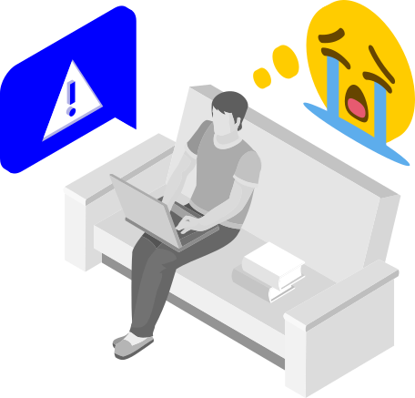
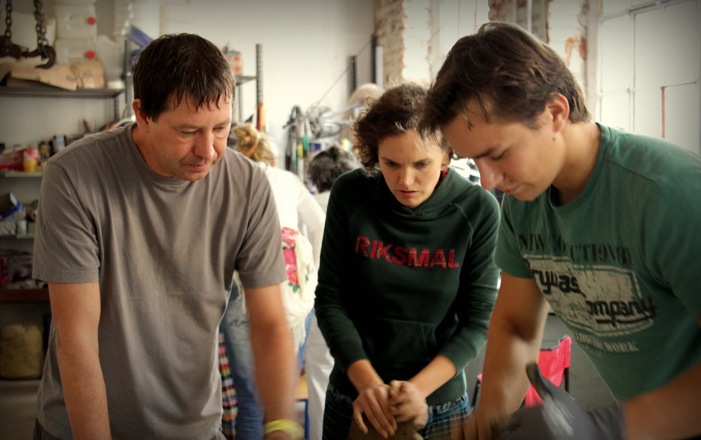

We were about to lead a workshop on parametric modeling. My wife, a psychologist – and myself, an architect and coder. We felt we were getting close to answering that question everyone was asking.
can people and computers work together as a team?
Even if it seems trivial, think about it. People are creative and great at finding sensible ways out of unexpected situations. Computers are precise and great at executing well-defined instructions. A team is a group that’s better than the sum of its parts. But whenever people work with a computer,
